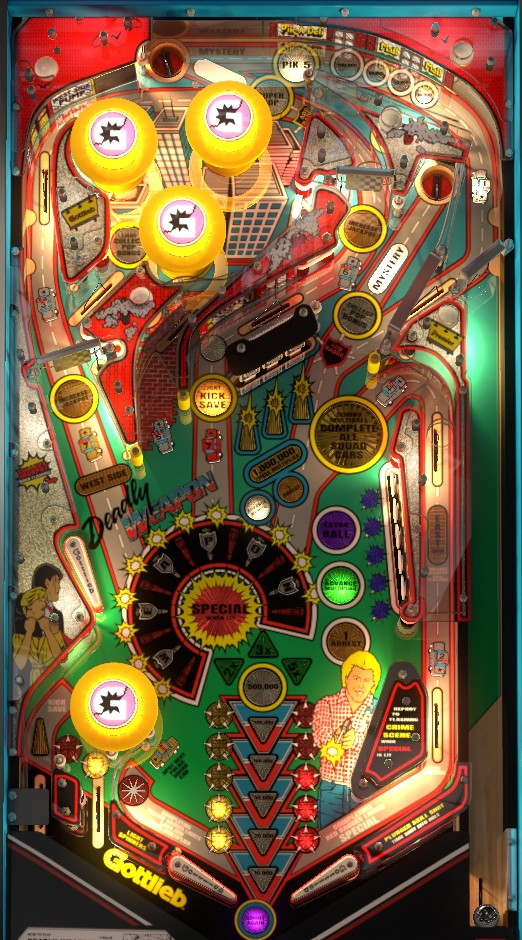

Not to be confused with Lethal Weapon 3 (Data East, 1992).
Collect the 1-6 white cop cars in number order from around the playfield, then be sure to collect the yellow 7 from the left orbit instead of the red 7 from the center lane. Collecting a 7 lights one of the saucers for red or yellow badge respectively; earning 5 red badges starts Special round, while 5 yellow badges starts the much more lucrative Million Times round at the drop targets. One saucer is always lit for Mystery, which is the only way to play multiball; in multiball, always play for Points instead of Arrests, and collect all white cop cars to score 1,000,000 the first time and 5,000,000 thereafter.
The below picture of Deadly Weapon's playfield was taken from the VPX recreation by Schreibi34.

The skill shot is a timed plunge to the saucer in the back of the game. The saucer scans through 5 values: from least to most value, they are 10,000, 20,000, 50,000, 100,000, and Pik-5. The higher value the award, the less time it is lit on the skill shot, with Pik-5 being quite precise. Simply making the saucer scores 5,000 points in addition to the lit value. Pik-5 is an enhanced version of the game's Mystery award which is explained in detail later; in short, press a flipper when you see an award you want, with Two Yellow Badges and Instant Multiball being priority picks.
A short plunge can come down the right exit to the orbit, where the switch for cop car #1 is located. Since cop car #1 is often the hardest one to score, this is a viable use of the plunge as well.
The main gameplay loop on Deadly Weapon involves collecting numbered cop cars in order from around the playfield. Their locations are:
After collecting 1-6, there are two #7s: a yellow 7 collected at the left spinner, or a red 7 collected at the center lane (with a large insert reading Light Kick Save).
Collecting a cop car lights the next one in sequence and starts a hurry-up. The hurry-up value starts at 100,000 points times the number of the cop car to be collected. You don't lose progress if the hurry-up times out; you just won't get any additional points when you collect the next numbered car. The next car in sequence can be spotted for you by pressing the star rollover near the left flipper when it is lit; it seems to be lit randomly. Collecting cars 1-5 lights the top saucer for a Pik-5 award. Completing 1-7 resets the cop car sequence back to 1. If you completed the sequence with the yellow 7 at the left orbit, the top saucer is lit for a yellow badge. If you completed the sequence with the red 7 at the center lane, the right saucer is lit for a red badge.
Badges are indicated by inserts near the flippers. There are three ways to earn badges of each colour: Mystery/Pik-5 awards, lit saucers after completing 1-7 cop cars, or the near left out lane. Mystery/Pik-5 awards usually award 2 badges. Lit saucers remain lit to score badges until 5 badges of that colour are earned and the respective bonus mode is started. The near left in lane alternates being lit for a red or yellow badge every time a pop bumper or slingshot is triggered.
Collecting 5 red badges starts Special Round. You have 20 seconds to shoot whichever lane is flashing to score a Special. The flashing light can move around the table, but seems to prefer the Brick Alley shot or the center lane. The mode ends when the Special is collected.
Collecting 5 yellow badges starts Million Times. For 20 seconds, each completion of the 3-bank of drop targets in the center of the game scores 1,000,000 points times the current bonus multiplier, which is increased in the sequence 2x-3x-5x-10x by Mystery/Pik-5 awards or by completing the 5-bank of standup targets on the right. This is the most lucrative scoring feature in the game.
During normal gameplay, one of the game's two saucers is always lit for Mystery. Which saucer is lit alternates each time a pop bumper or slingshot is scored.
Pik-5 is earned at the top saucer when lit (on a skill shot, or after collecting cop car #5 in proper sequence) and automatically scrolls through a few awards on the display; press a flipper button to stop the scrolling and collect the one you want. If you do not pick an award within 5 seconds during Pik-5, one will be chosen for you.
As far as I know, Mystery and Pik-5 pull from the same list awards. The following list, which may not be comprehensive, includes all of the awards I have seen:
Mystery/Pik-5 awards are the only way to play multiball on Deadly Weapon. When Instant Multiball is given as a Mystery award, you are immediately prompted to choose to play for either Arrests or Points. Always choose Points by pressing the right flipper. If you choose Arrests, you are willingly playing multiball for 1/10 of its original value. Multiball is a 2-ball round by default; however, if you started multiball from the right saucer, you can plunge directly into the top saucer with the 2nd ball, and a 3rd ball will be kicked into the shooter lane. All locked balls are released when any switch in the game other than a saucer is triggered by a plunged ball. In multiball, the primary objective is to recollect all 6 white cop cars in any order. (Consider short-plunging the ball that starts multiball to earn credit for car #1 for free.) If you chose to play multiball for Arrests, you will always get 10 Arrests for completing the cop cars, which is worth 100,000 points in end of ball bonus. If you chose to play for points, the first cop car completion in multiball scores 1,000,000 points, and further completions within the same multiball score 5,000,000. There is no grace period at the end of multiball. Collected cop cars during multiball do not count toward the main 1-7 single ball sequence in any way.
The Jackpot starts at 1,000,000 points. When unlit, the left spinner scores 100 points per spin and the right spinner scores 1,000 per spin. Making the lower switch of the right in lane (corresponding to car 2) or the star rollover near the left flipper at any time lights both spinners for about 15 seconds. When lit, spinners score 10,000 points per spin and add 20,000 points to the Jackpot per spin. The Jackpot carries over across players and games, only resetting back to 1,000,000 when collected. The Jackpot maxes at 9,999,000 points. To score the Jackpot, first shoot both the the left orbit and the upper entrance to the right in lane, in any order and at any time, to light West Side and East Side. When both are lit, East Side will flash for 15 seconds; make the East Side shot again to score the Jackpot. If you do not score the Jackpot in time, both East Side and West Side will unlight, and you must collect both again to get another chance. The Jackpot can only be qualified and scored in single ball play when no timed rounds are active.
Each player has their own Pop Bonus, which starts at 1,000,000 points at the start of each game. Hitting any of the 3 upper pop bumpers adds 10,000 points to the pop bonus, up to a maximum of 9,999,000. If the ball leaves the upper pop bumper area via the lane to the left of the pop bumper nest reading Light Collect Pop Bonus, everything in the game will unlight except for the two saucers: shoot the right saucer to collect your Pop Bonus and reset it to 1,000,000 points.
Weapon letters correspond to a carryover pseudo-wizard mode award. Individual letters in Weapon are only given as Mystery/Pik-5 awards, or the game can be set up to give a Weapon letter for free when a game ends. Completing the word Weapon starts Riot Bonus round. Weapon can be completed naturally, getting letters from Mystery awards and the end of the game one at a time, or you can complete the entire word Weapon at once by shooting the top saucer when it is lit for Supercop, which only happens when the right saucer is also lit for Collect Pop Bonus.
Riot Bonus is a 25-second mode that prompts you to shoot all of the flashing shots. These flashing shots are the East Side upper right in lane, a full shot to the left orbit, the right spinner, and both the Brick Alley and Light Kick Save center lanes. Each shot made scores 3 Arrests. Making all shots within the time limit scores an additional 10 Arrests and a Special. This is worth almost no real pinball points and should be roundly ignored if you are focused on getting a high score.
Hit a flashing target in the 5-bank on the right to light it solidly. Completing the bank scores the award lit in front of the bank. This will most often be Advance Multiplier, which is in the sequence 2x-3x-5x-10x. If the current bonus multiplier is 2x, 3x, or 5x, hitting a pop bumper or slingshot will cause the lit award to alternate between Advance Multiplier and Extra Ball. This extra ball can only be collected once per ball in play. If the bonus multiplier is maxed out at 10x, all completions of this bank award 1 Arrest. Progress on this bank cannot be made during multiball, during timed rounds, or when Supercop and Collect Pop Bonus are lit.
Each completion of the 3-bank of drop targets during single ball play advances the end of ball bonus, which is shown near the flippers. No bonus is given for free, so it is possible to drain with 0. The value of the bonus increases in the sequence 10,000 - 20,000 - 50,000 - 100,000 - 200,000 - 500,000. This bonus times the multiplier earned from Mystery awards or 5-bank completions is added at the end of the ball. There is no mid-ball bonus collect, and there is no way to preserve the base bonus or multiplier from ball to ball. Earning a tilt warning at any time resets the base bonus count, and you must build it up again with more drop target completions. If the bonus is built to 500,000 points, further completions of the drop targets each score 1 Arrest.
During the Million Times round started by earning 5 yellow badges, each completion of this drop target bank scores 1,000,000 times the current bonus multiplier, for a maximum of 10,000,000 points. This value can be repeatedly collected during the 20-second Million Times round by completing the bank multiple times.
1 Arrest is recorded for each cop car collected in sequence during single ball play, each cop car collected in any order during multiball play, each completion of the drop targets after 500,000 base bonus, and each completion of the 5-bank standup targets after reaching 10x multiplier. You can also earn 3 Arrests for each flashing shot made during Riot Bonus round, 5 Arrests as a Mystery award, and 10 Arrests for completing Riot Bonus or collecting all of the cop cars during a multiball that is being played for Arrests. Each player's Arrest count is shown in a separate red display near the top of the backglass, and maxes out at 99 for each player. At a predetermined number of Arrests (default 20), an extra ball is awarded. At the end of each ball, 10,000 points are scored for each Arrest a player has made during the entire game so far; this value does not get multiplied by the bonus multiplier.
On the left, a pop bumper takes the place of a left slingshot, and there is no left in lane. Outside of/underneath the pop bumper are two out lanes; the near out lane is lit alternately for a red or yellow badge, and the far out lane can be lit for Kicksave. The Kicksave can be lit from a Mystery award or by shooting the center lane just to the left of the drop targets. The Kicksave unlights when used, but it also unlights on its own after 20 seconds.
The star rollover near the left flipper lights the spinners to score 10,000 per spin and advance the Jackpot for about 15 seconds. The rollover itself can also be lit for spot a cop car.
On the right, there is a slingshot and an in lane, but no out lane. The in lane is the exit to the East Side shot, which contains both car #4 and car #2, and is lit for Jackpot for 15 seconds after both an East Side shot and a West Side (left orbit) shot have been made.
I have not been able to confirm the value of extra balls and specials for competition/novelty play. They are almost certainly worth either 500,000 or 1,000,000 points.
ACAB, always and forever.